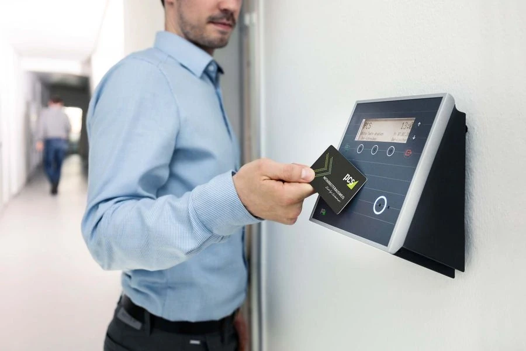

Güvenlik Kamera Sistemleri
IP ve analog kameralar, DVR/NVR kayıt cihazları, uyumlu kayıt diskleri ve kamera bağlantı aksesuarları.
Kartlı, şifreli ve modele göre biyometrik geçiş terminalleri; PDKS, elektrikli kilit, alarm paneli, sensör ve siren ürünleri.

VK Bilgisayar olarak kapı ve alan girişlerinin kontrolünde kullanılan terminalleri, kontrol cihazlarını, kilit ürünlerini ve personel devam kontrol ekipmanlarını tedarik ediyoruz. Kart, şifre veya parmak izi gibi doğrulama yöntemleri ile terminal ve yazılım ihtiyaçları mevcut sistem ve talep edilen kullanım özelliklerine göre değerlendirilir.
Giriş ihlali alarm taleplerinde panel, sensör, siren ve ilgili modüllerin birlikte uyumu dikkate alınır. Mevcut bir sisteme ürün eklenirken marka ve model, desteklenen bağlantı veya haberleşme yapısı, kapasite ve güç gereksinimleri kontrol edilir.
Yazılım, terminal ve aksesuarların dahil olup olmadığı veya ayrıca gerekip gerekmediği teklif aşamasında belirtilir.
IP ve analog kameralar, DVR/NVR kayıt cihazları, uyumlu kayıt diskleri ve kamera bağlantı aksesuarları.

Switch, yönlendirici, modem ve kablosuz erişim noktaları; PoE ve ağ bağlantı ihtiyaçlarına uygun cihaz seçenekleri.

Kesintisiz güç kaynakları, modele uygun UPS aküleri, regülatörler, aşırı gerilim korumalı prizler ve güç dağıtım ürünleri.
IP ve analog güvenlik kameralarının bağlantı, kablolama, kayıt cihazı ve depolama açısından farklarını karşılaştırın.
Rehberi inceleİstenen doğrulama yöntemi, kullanıcı sayısı, mevcut kart teknolojisi, kontrol sistemi ve yazılım özellikleri birlikte belirtilmelidir. Bir terminalin bütün kart veya yazılım türleriyle çalışacağı varsayılmadan model bilgileri kontrol edilir.
Evet. Personel devam kontrol terminalleriyle birlikte kullanılacak yazılım, istenen raporlama özellikleri ve lisans ihtiyacı belirtilmelidir. Her terminal paketinde aynı yazılım veya bütün özelliklerin bulunduğu varsayılmamalıdır.
Panel ve eklenecek sensörün modelleri, desteklenen bağlantı veya haberleşme yapısı ve sistem kapasitesi üzerinden değerlendirme yapılır. Aynı marka olması tek başına bütün modellerin uyumlu olduğu anlamına gelmez.
Bağlantı, kontrol ve güç gereksinimleriyle kapının kullanım özellikleri birlikte değerlendirilmelidir. Mevcut cihaz ve kilit modellerini paylaşmanız ürün eşleştirmesine yardımcı olur.